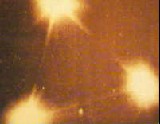

La revue Science & vie fait sa première page avec le sous-marin MHD. Suit un article qui évoque les percées
récemment réalisée dans ce domaine : les navires de surface et les sous-marins vont connaître bientôt une véritable
révolution, grâce à la propulsion électromagnétique, découlant des progrès récents en matière de supraconduction.
L'article comporte une photo d'une vedette construite par les japonais, prête pour les essais, équipée de 2
propulseurs MHD, identiques à celle que Jean-Pierre Petit a fait naviguer 10 ans plus tôt dans un petit bassin d'eau salée sur le
plateau de l'émission Temps X de TF1. Une illustration décrit l'accélérateur pariétal que Petit à
expérimenté en 1975, sans mentionner Petit Petit, J.-P.: 1991.
L'ovni de Tagsek

A Tagresk (Russie), un autre "triangle volant" est photographié (ci-contre).
A Blère (Indre-et-Loire), 1 témoin circulant en voiture est
"survolé" par une ombre en forme de raie (poisson) qui traverse sa trajectoire. Cette ombre assez sombre laisse
supposer au témoin qu'il a été survolé par 1 objet à basse altitude volant aux environs de 60 à 80 km/h SEPRA: PAN classé C.
A Calais (Pas-de-Calais), 1 témoin observe depuis chez lui 4
lumières clignotantes pendant environ 15 mn SEPRA: PAN classé C.
Lancement du télescope spatial Hubble.
A Montmarault (Allier), observation dans la région
d'Orléans par 3 témoins indépendants d'une lumière rouge de la taille apparente de la lune. Le phénomène circulait
en biais vers la terre sans bruit. 1 témoin a indiqué une excitation particulière de ses chiens. Le phénomène a duré
quelques s. La description faite par les témoins peut faire penser à une rentrée atmosphérique, mais n'a pu être
identifié SEPRA: Cas classé D.